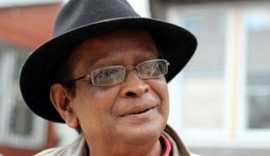
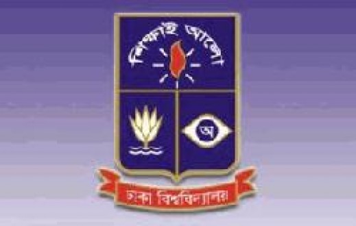
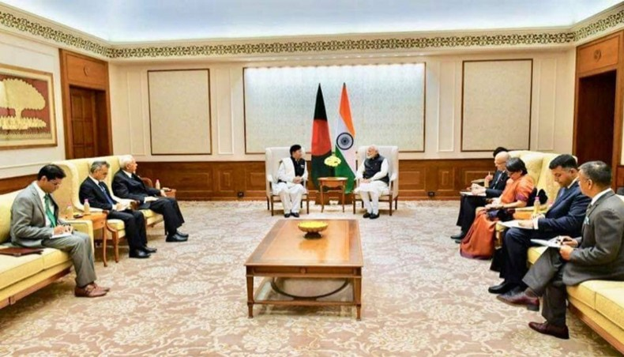

The daily Naya Diganta
Nazrul’s death anniversary observed
The 42nd death anniversary of national poet Kazi Nazrul Islam was observed on Monday. Nazrul, revered as Bidrohi Kobi(a rebel poet) for his activism for political and social justice, breathed his last in Dhaka on 12th Bhadro of Bangla calendar year 1383 (August 29, 1976) at the age of 77. He was buried with full state honours beside the Dhaka University Central Mosque. Nazrul produced a large body of poetry and music with themes that included religious devotion and spiritual rebellion against all sorts of oppression. Different socio-cultural and political organizations observed elaborate programmes to mark the occasion. Television channels aired special programmes on his works and life to observe the day.
Humayun Ahmed remembered with love, reverence at Nuhash Polli
The 69th birth anniversary of popular novelist and filmmaker Humayun Ahmed was celebrated at Nuhash Polli of Pirojali village in Sadar upazila of Gazipur with great love and affection, UNB reports. In the morning, writers, reporters, readers and fans of Humayun placed floral wreaths on the grave of the writer with humble respect.
What should I write about?
What should I write about? Here is a painful shout. The truth is getting the insult And the beauty forgets to get absurd. I am feeling shy to be here. My heart is holding a gift without care. I call you and you are absent Our love is crazy to be great. There is the emptiness of knowledge Ignorance is taking the advantage. I am just observing everything With the brain of flower plucking. No hope and no depression is here With only the greatest surrender Let us be the fresher again To say only the creation needs to regain.
DU 'Kha' unit admission test result published
Results of Dhaka University ‘Kha’ unit entry test for arts faculty are out and 14.68 percent of the aspirants have cleared it. Vice Chancellor AAMS Arefin Siddique announced the results on Tuesday, saying there were 4,351 successful candidates. Of the successful students, 2,296 will finally enroll at the university. About 29,645 candidates took the test held on October 9. The results will be available on the university website www.admission.eis.du.ac.bd.
HC upholds govt ban on teachers’ coaching business
China has passed a new law that seeks to "Sinicize" Islam within the next five years, the latest move by Beijing to rewrite how the religion is practiced, reports Aljazeera.
Modi assures India’s cooperation in resolving Rohingya crisis
Indian prime minister Narendra Modi on Thursday assured New Delhi’s cooperation in resolving the longstanding Rohingya crisis in Bangladesh. His assurance came when visiting Bangladesh foreign minister AK Abdul Momen sought India’s support for early repatriation of Rohingya people to Myanmar’s Rakhine state as he met the Indian prime minister in New Delhi in the morning. As Momen thanked prime minister Modi for India’s humanitarian assistance to Rohingyas, the PM said that India was always with Bangladesh and would remain beside it, a press release issued by Bangladesh mission in India said. During the meeting, the Indian prime minister mentioned that the partnership between Bangladesh and India was flourishing under the visionary leadership of prime minister Sheikh Hasina. He reaffirmed India’s sincere commitment to Bangladesh’s prosperity and development and viewed that Bangladesh-India relations was a model between the two neighbouring countries which needed to be showcased for wider audience around the world. The foreign minister expressed his satisfaction on the excellent bilateral relations that exist between the two countries which had grown and prospered, especially with the statesmanship of prime minister Sheikh Hasina and prime minister Modi. He stressed that Bangladesh would continue her resolve in further strengthening and deepening her relations with India in the coming days.
Editor: Alamgir Mohiuddin
Publisher:Shamsul Huda, FCA
1 R. K. Mission Road, Dhaka-1203.
Phone:02-57165261-9
© All rights reserved | dailynayadiganta.com 2019